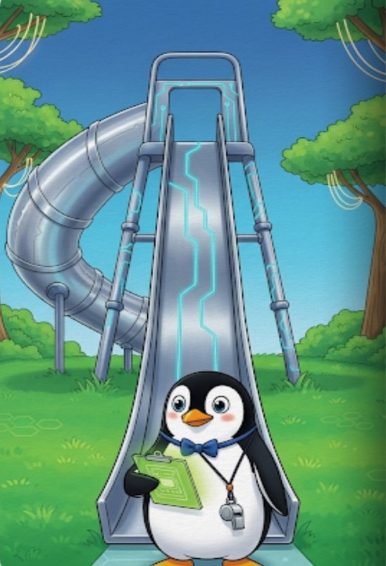
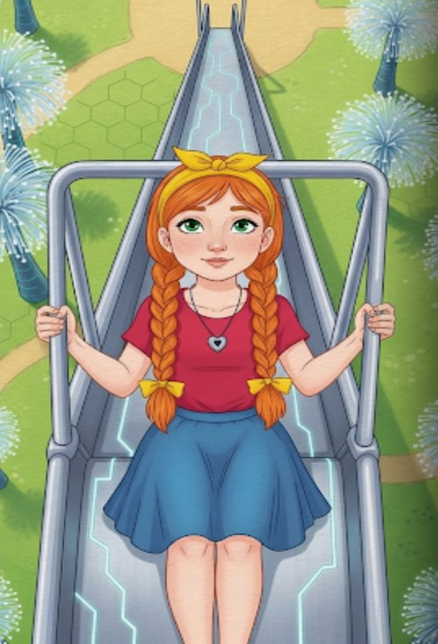
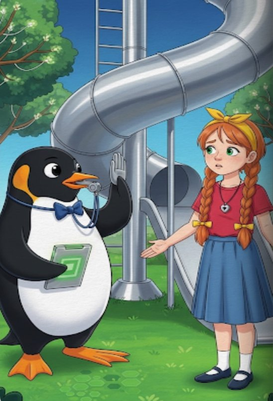

Mr. Pengi and the Super‑Duper Slide
The Linux Completely Fair Scheduler & CPU Quotas, explained simply
by Per Arneng
♦ ♦ ♦Chapter 1
Mr. Pengi and the Super-Duper Slide

Once upon a time, at the very center of the Silicon Playground, there was a magnificent, shiny playground slide called The CPU. It was the fastest, most fun slide in the world, but there was a catch: only one kid could go down the slide at a time.
To make sure nobody fought over the slide, the school principal hired a very organized teacher named Mr. Pengi (who was, in fact, a penguin). Mr. Pengi had a special set of rules called the Completely Fair Scheduler, or CFS for short.
Mr. Pengi held a magical clipboard with a stopwatch. His rule was simple and incredibly fair:
“The kid who has spent the least amount of total time on the slide gets to go next!”
If someone had barely played, Mr. Pengi made sure they got to jump right in so they could catch up to the others. Because Mr. Pengi was always calculating who had the least amount of “Slide Time,” everyone got a wonderfully equal chance to play. This is how normal scheduling works!
Chapter 2
The Two Teams
One sunny Tuesday, a giant field trip arrived. The kids were divided into two groups: the Blue Shirts and the Red Shirts.
At first, Mr. Pengi just treated them all as individual kids. But then, the teachers realized they needed to organize things better. They put the kids into cgroups (Control Groups). They told Mr. Pengi, “Treat the Blue Shirts as one big group, and the Red Shirts as another big group. Make sure the groups share the slide fairly!”
So, Mr. Pengi adjusted his clipboard. If the Red Shirts had been using the slide a lot, he would tell the whole Red Shirt line to wait and let the Blue Shirts have a turn. If the Blue Shirts went to eat lunch, the Red Shirts were allowed to use the slide 100% of the time because the slide was empty! Why let a good slide go to waste?
Chapter 3
The Strict Park Pass
After lunch, the Red Shirts’ teacher noticed her students were getting way too sweaty and ignoring their homework. She marched up to Mr. Pengi and said, “We are setting a strict rule. The Red Shirts are now on a Quota (cfs_quota_us). As a team, they are only allowed to use the slide for a total of exactly 10 minutes out of every hour (cfs_period_us).”
Mr. Pengi nodded and updated his magic clipboard. The hour started.
Now, within the Red Shirt group, there were two very different kids. There was Little Timmy, who was a speedster. He dashed up the stairs and zoomed down, over and over, as fast as his legs could carry him. Then there was Little Berta. Berta liked to take her time. She climbed the steps slowly, held onto the railings, and enjoyed the view before finally sliding down.
Mr. Pengi was still fair within the Red Shirt group—he always checked whose turn it was next. But every time he called Berta’s name, she was still slowly climbing the stairs. “Berta’s not ready—Timmy, you go again!” And Timmy, always waiting eagerly at the bottom, dashed right back up and zoomed down once more.
Because they shared the team’s 10-minute quota, every second Timmy spent on the slide counted against the whole team. By the time Berta finished her first slow ride, Timmy had already gone twenty times.

Berta was just reaching the top of the stairs for her second ride when—

“TWEET!” Mr. Pengi blew his whistle.
“Red Shirts, your team’s quota is up! You are now Throttled!”
“What?!” cried Berta, her lower lip trembling. “But I only got to ride once! Mr. Pengi kept calling my name, but I was still climbing! Timmy was always ready, so he went twenty times and used up all our team’s time!” Berta was very sad and frustrated. Mr. Pengi had been perfectly fair—he’d offered her every other turn. But because she was slow and Timmy was always waiting, Timmy naturally burned through the team’s quota. And now the strict team limit had completely run out, overriding everything else.
The entire Red Shirt team had to go sit on the park benches.
A few minutes later, the Blue Shirts decided they were tired of the slide and went to play on the swings. The Super-Duper Slide was completely empty.
Timmy and Berta looked at the shiny, unused slide. They ran up to Mr. Pengi. “Mr. Pengi!” they complained together. “The slide is just sitting there empty! Nobody is using it at all! Can we please go down?”
Mr. Pengi looked at his clipboard, then shook his head. “I’m sorry. Under normal CFS rules, I would let you play because the slide is idle. But your teacher gave your group a Quota. Your group has used its 10 minutes for this hour (cfs_period_us). Even though the slide is empty, you are not allowed back on until the giant playground clock strikes the next hour.”
So, Berta sat on the bench feeling cheated by Timmy, and the rest of the team grumbled about the empty slide, learning a very hard lesson about how strict team limits work.
The Moral of the Story
- The Noisy Neighbor Problem (Timmy vs. Berta): When you apply a
cfs_quota_usto a cgroup, all processes (threads) inside that group share that quota. CFS is still fair within the group—it offers each thread its turn. But a CPU-hungry thread that’s always ready to run (Timmy) naturally consumes far more quota than an I/O-bound thread that spends most of its time waiting (Berta). The result: the hungry thread burns through the shared quota, and the whole group gets throttled—starving the quiet threads that only needed a tiny bit of CPU time. - Wasted Resources (The Empty Slide): A quota is a hard limit. Once the quota is exhausted for the period (
cfs_period_us), the scheduler will absolutely refuse to let those processes run until the next period starts. It will strictly enforce this rule, even if the CPU is sitting at 0% usage and doing absolutely nothing else. - A Small Relief — Burst Quota: Since Linux 5.14, there is
cfs_burst_us, which lets a cgroup bank unused quota from previous periods and spend it in a burst later. If the Red Shirts had been sitting quietly for a few periods, they could have saved up extra slide time for when they really needed it. This helps smooth out occasional spikes, but it doesn’t solve the fundamental problem—a consistently hungry Timmy will still drain whatever quota is available, banked or not.